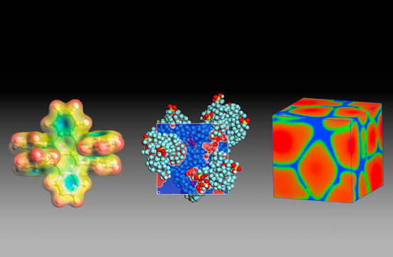

L'écosystème Dassault Systèmes : Des outils de CAO aux jumeaux virtuels

SOLIDWORKS s'impose comme la solution de référence et le leader incontournable de la
conception assistée par ordinateur (CAO) ainsi que du développement de produits 2D et 3D. Principalement
plébiscité par les PME, l'industrie manufacturière et le monde de l'éducation, ce logiciel écosystémique
permet de modéliser des pièces et des assemblages complexes avec une précision chirurgicale. De la
simulation mécanique rigoureuse à la gestion optimisée des données techniques, il offre aux ingénieurs et
concepteurs un flux de travail intuitif pour valider, documenter et transformer rapidement leurs concepts en
innovations industrielles concrètes.

3DEXPERIENCE constitue le cœur technologique de Dassault Systèmes, unifiant l'ensemble de
ses marques au sein d'un écosystème collaboratif unique. Conçue pour briser les silos industriels, cette
plateforme centralise les données pour propulser l'intelligence collective et la co-création en temps réel.
Grâce au déploiement de jumeaux virtuels et d'une IA scientifique de pointe, elle permet de simuler et de
prédire le comportement des innovations avec une précision chirurgicale.
Elle offre ainsi un environnement global pour concevoir, valider et piloter
durablement les produits de demain.

3DEXCITE se positionne comme le levier d'excellence visuelle de l'éditeur, transformant les
données d'ingénierie brutes en expériences marketing immersives et percutantes. Spécialisée dans la
simulation 3D haut de gamme, cette solution permet de générer des visuels photoréalistes, des configurateurs
de produits en temps réel et des expériences de réalité virtuelle captivantes. En connectant directement le
bureau d'études aux équipes commerciales, elle élimine le besoin de prototypes physiques pour les campagnes
publicitaires. Elle offre ainsi un flux de travail agile permettant d'anticiper les attentes du marché,
d'accélérer les ventes et de sublimer le parcours client.

BIOVIA incarne le pilier de l'innovation scientifique de l'éditeur, en intégrant
l'intelligence artificielle au service de la biologie, de la chimie et de la science des matériaux. Dédiée à
la recherche moléculaire de pointe, cette solution logicielle permet de modéliser et de simuler les
propriétés de la matière à l'échelle atomique pour accélérer la découverte de nouveaux composés. À travers
le concept de laboratoire connecté, elle centralise et sécurise les données de recherche pour optimiser la
collaboration scientifique mondiale. Elle offre ainsi aux chercheurs un cadre prédictif unique pour
concevoir des formules innovantes, valider la conformité réglementaire et industrialiser durablement la
science de demain.

CATIA s'affirme comme le fleuron historique et le numéro un mondial de la conception
assistée par ordinateur pour le développement de produits hautement sophistiqués. Plébiscité par les géants
de l'aéronautique et de l'automobile, ce logiciel pionnier excelle dans la modélisation géométrique avancée
et l'ingénierie des systèmes complexes. Au-delà du simple dessin en trois dimensions, il intègre des
capacités uniques de simulation en contexte réel pour valider le comportement fonctionnel de structures de
grande envergure. Il offre ainsi une plateforme d'excellence qui permet aux grands groupes industriels de
repousser les limites de l'innovation, d'optimiser les cycles de conception et de standardiser les processus
de fabrication à l'échelle internationale.

CENTRIC PLM se déploie comme l'outil stratégique de l'éditeur dédié à la transformation
numérique des industries de la mode, du retail et des produits de grande consommation. Conçu pour répondre
au rythme effréné des tendances, ce logiciel orchestre l'intégralité du cycle de vie des collections, de la
planification initiale à la mise sur le marché. Il centralise les flux de données pour optimiser la
création, affiner les stratégies de tarification et fluidifier la commercialisation sur les canaux de vente.
En connectant les créateurs, les acheteurs et les fournisseurs, il offre une réactivité maximale pour
réduire les coûts de développement, sécuriser les marges et accélérer le lancement de produits
éco-responsables adaptés aux exigences changeantes du marché mondial.

DELMIA s'affirme comme le fleuron historique et le numéro un mondial de la conception
assistée par ordinateur pour le développement de produits hautement sophistiqués. Plébiscité par les géants
de l'aéronautique et de l'automobile, ce logiciel pionnier excelle dans la modélisation géométrique avancée
et l'ingénierie des systèmes complexes. Au-delà du simple dessin en trois dimensions, il intègre des
capacités uniques de simulation en contexte réel pour valider le comportement fonctionnel de structures de
grande envergure. Il offre ainsi une plateforme d'excellence qui permet aux grands groupes industriels de
repousser les limites de l'innovation, d'optimiser les cycles de conception et de standardiser les processus
de fabrication à l'échelle internationale.

ENOVIA se structure comme la clé de voûte collaborative de l'éditeur pour la gestion
globale du cycle de vie des produits (PLM), particulièrement taillée pour l'ingénierie de systèmes complexes
à grande échelle. Cette solution de gouvernance connecte de manière sécurisée les équipes, les processus et
les données techniques à travers toute l'entreprise, de la phase de concept jusqu'à la mise en production.
En brisant la distance géographique entre les départements, elle assure une traçabilité totale des
modifications, gère la conformité réglementaire et coordonne les nomenclatures de produits de haute
technicité. Elle offre ainsi aux dirigeants industriels un outil de pilotage robuste pour maîtriser les
risques, réduire les délais de développement et piloter efficacement des projets d'envergure internationale.

GEOVIA se déploie comme l'outil d'excellence de l'éditeur dédié à la modélisation
géologique et à la planification minière stratégique, visant à optimiser l'exploitation responsable des
ressources de la Terre. Cette solution scientifique de pointe permet de cartographier la subsurface avec
précision, de simuler la structure des gisements et d'évaluer la faisabilité économique des projets
extractifs. En intégrant des données géospatiales de masse, elle offre aux ingénieurs et géologues la
capacité de concevoir des infrastructures minières virtuelles hautement sécurisées. Elle constitue ainsi un
levier d'aide à la décision incontournable pour maximiser l'efficacité opérationnelle, garantir la sécurité
des équipes et piloter une gestion environnementale durable des sites industriels.

MEDIDATA s'affirme comme la plateforme cloud leader de l'éditeur dédiée à la transformation
numérique des sciences de la vie, en accélérant la conception, la planification et la gestion des essais
cliniques pour la médecine de précision. Cette solution hautement sécurisée centralise les données des
patients et automatise les flux de recherche pour les industries pharmaceutiques et biotechnologiques. Grâce
à des outils d'analyse prédictive et de gestion intelligente des protocoles médicaux, elle réduit
drastiquement le temps de mise sur le marché des thérapies innovantes tout en garantissant une conformité
réglementaire absolue. Elle offre ainsi aux chercheurs un écosystème collaboratif mondial indispensable pour
optimiser la sécurité des patients et façonner la médecine thérapeutique de demain.

OUTSCALE se positionne comme le socle cloud souverain du groupe, apportant une réponse
stratégique aux défis majeurs de la cyber-gouvernance, du contrôle des données et de la souveraineté
numérique. Cette filiale hautement qualifiée offre des infrastructures cloud (IaaS) de confiance, certifiées
selon les normes de sécurité les plus strictes (comme SecNumCloud en France). En garantissant une
imperméabilité totale aux lois extraterritoriales, elle permet aux institutions publiques et aux industries
critiques de stocker et de traiter leurs informations sensibles en toute sécurité. Elle constitue ainsi la
fondation technologique indispensable pour déployer les jumeaux virtuels de l'éditeur au sein d'un
environnement numérique protégé, résilient et pleinement autonome.

SIMULIA s'impose comme le pilier de la simulation physique de l'éditeur, permettant
d'évaluer virtuellement les performances, la fiabilité et la sécurité des matériaux et des structures. Cette
solution d'ingénierie prédictive intègre des outils avancés pour modéliser le comportement des produits face
à des contraintes réelles, telles que les crash-tests automobiles, l'aérodynamisme aéronautique ou la
fatigue des composants. En reproduisant fidèlement les lois de la mécanique, des fluides et de
l'électromagnétisme, elle évite le recours systématique aux prototypes physiques longs et coûteux. Elle
offre ainsi aux ingénieurs un environnement de validation scientifique rigoureux pour optimiser la
robustesse des produits, accélérer l'innovation et garantir la sécurité des utilisateurs finaux.